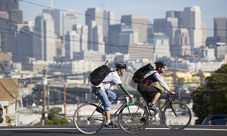
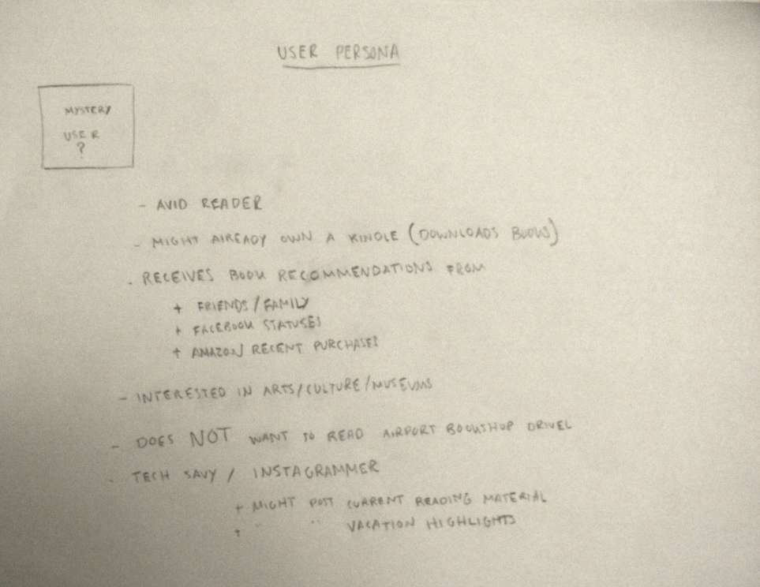
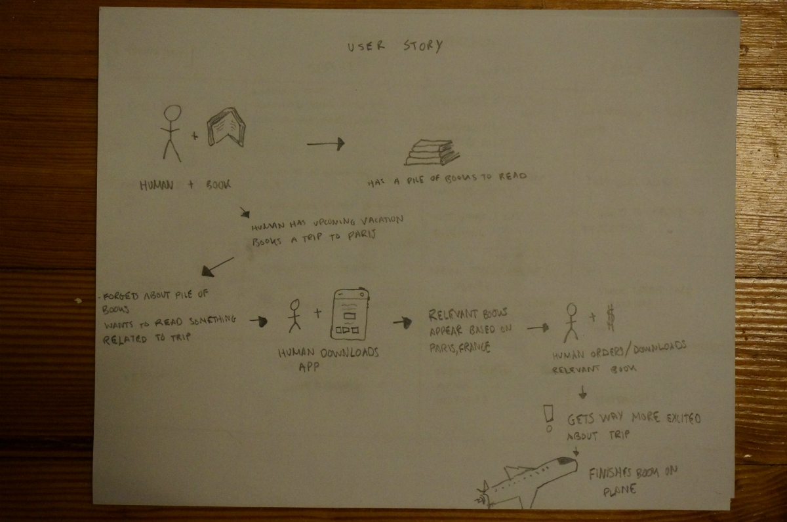
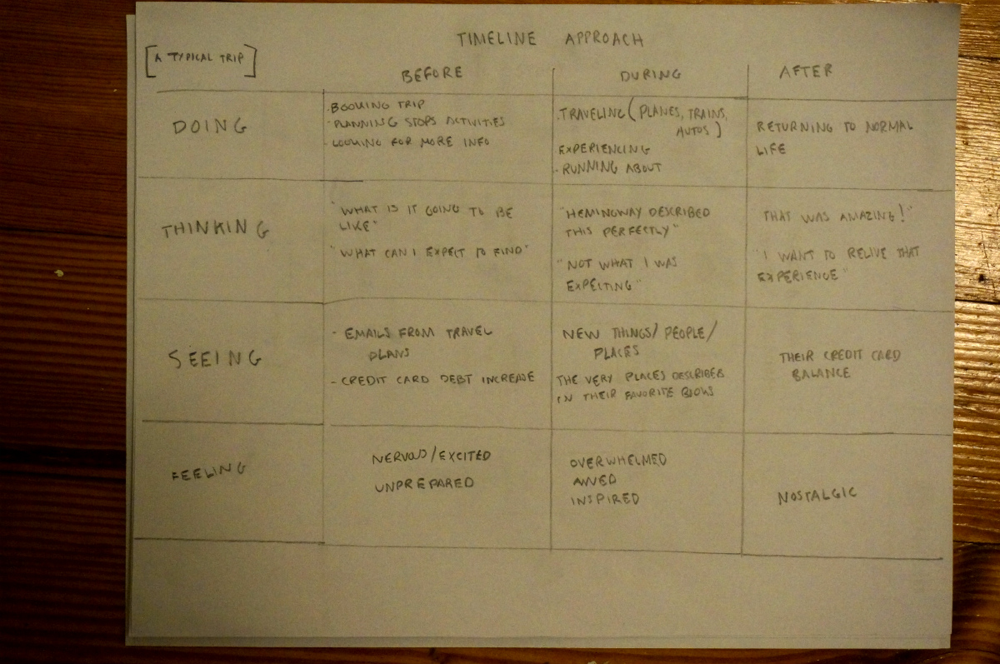
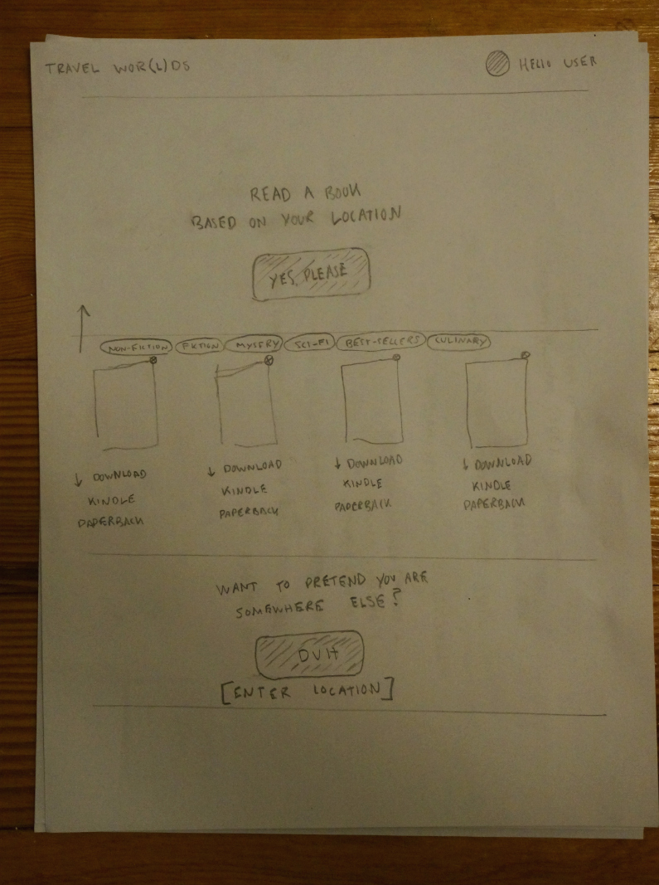
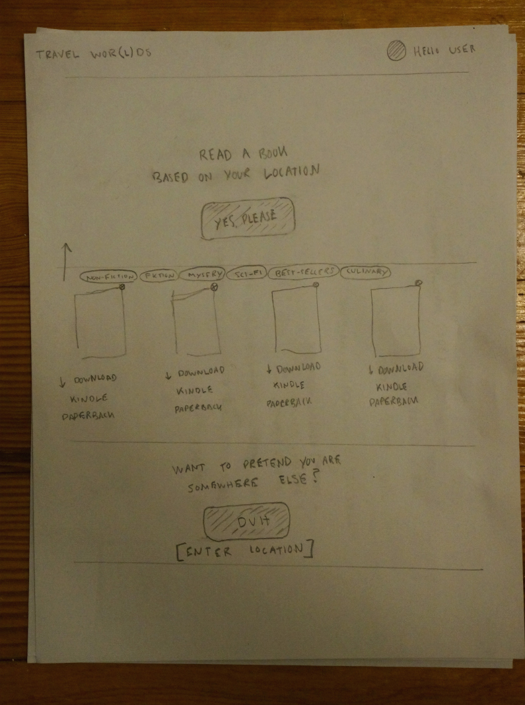

[ TRAVEL ]
Initial thoughts
Bike share (air bike and bike)?
Solve the issue of having to travel with a huge bike box.
However,
- most major cities already have well established
bike share programs (e.g. Hubway).
- You would have to get an appropriately fitting bike, ensure it is in
working order.
- As much as I love cycling I would not feel confident handing over one of
my bikes to an internet stranger.
So then I began to think about why we travel in the first place?
What I gathered for the answer is to get a glimpse of, personally experience, and to better understand a new and different culture.
This, then becomes the most important problem facing the user.
The core issue my App is trying to solve for a traveller/user is how do you get to know a place, without having been there? Or, is there a way to further understand a location and culture you are visiting?
Naturally the clear answer to this question is through books.
Product.
The application which would solve this problem takes user input via location and recommends books/novesl based on this information.
Who might use something like this? [Users]
What is the user story while using what you built?
Most destination trips begin long before the airplane takes off. There are likely weeks of planning, coordinating logistics, finding hotels, and the like. Some might even spend months saving up $$ to afford their trip.
During this period a user could input their destined location and receive book recommendations which pertain to their trip.
For last minute trips you could download a kindle version of a book or an audio recording as well.
Design.
 

I designed a simple interface which uses google map reverse geo location to find the user. This information is then used via the Amazon Product Advertising API to search for and display books.
What does and does not work?
The idea is straightforward and my initial designs created a very simple product for a specific user. However, the feedback I got was for much more refined and added functionalities.
Users wanted
- To be able to remove books from the list that they
have already read.
Sort books by categories.
Save books to purchase later.
Rate books (similar to netflix) to influence a more
refined product search.
What would you do next based on feedback?
Based on feedback I think there is potential for a social oriented book sharing app. In the marketplace right now 'GoodReads' seems to do just that.
Instead of creating another social app I can almost imagine this product merging into an already existing social platform. Instagram is able to tag your photos based on location, there could be a page which uses this information to suggest reading material.
[ THE APPLICATION ]
Link.